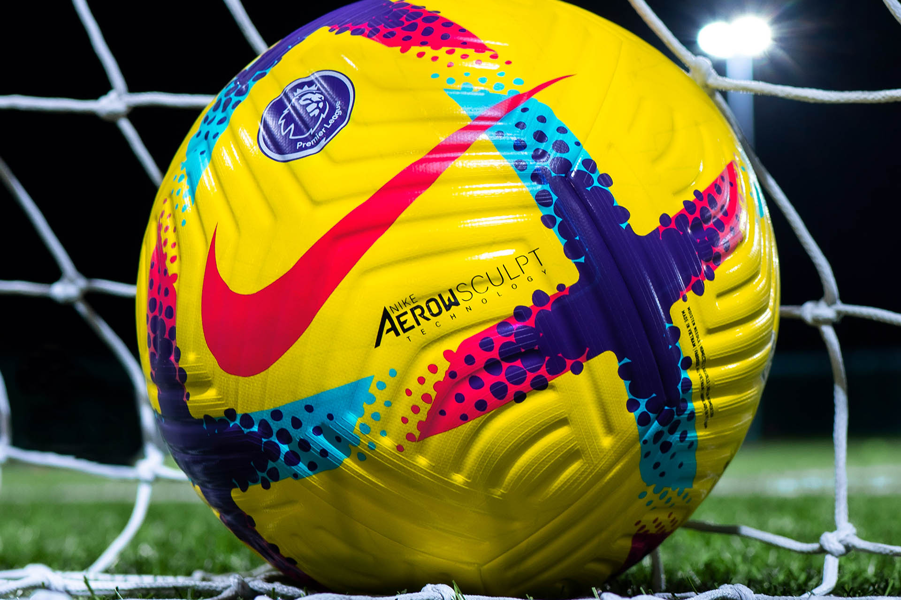

CBF define confrontos da 1ª fase da Copa do Brasil; confira
A Confederação Brasileira de Futebol (CBF) sorteou nesta sexta-feira as duas primeiras rodadas da Copa do Brasil, que novamente contará com 92 equipes, 12 delas entrando somente na terceira fase, quando os jogos se tornam mata-matas de ida e volta, com recorde de premiação de mais de R$ 500 milhões divididos entre os participantes e sem vantagem de empate. Os confrontos dos quatro gigantes desta rodada de abertura, todos bem longe de casa, terão Fluminense x Águia de Marabá-PA, Vasco x União Rondonópolis-MT, Atlético-MG x Tocantinópolis-TO e Grêmio x São Raimundo-RR. Destaque, ainda, para Red Bull Bragantino x Sousa-PB e Athletico-PR diante do Pouso Alegre-MG.
Ler mais